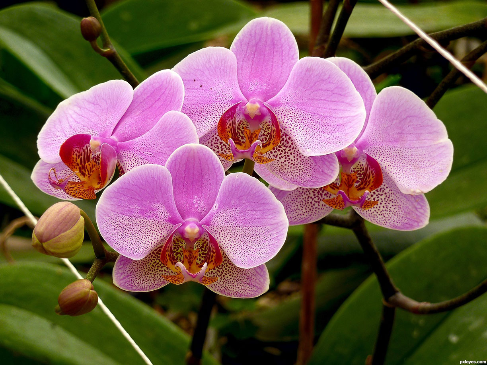

Tips on Caring for Orchids
There are five factors which influence the growth and development of orchids:
- Watering and Humidity
- Light
- Temperature
- Ventilation
- Feeding
1. Water and Humidity In general orchids have a growth period (beginning and active), a rest period and a blooming period. The beginning of the growth period is characterized by when the orchid starts to produce new shoots and roots and it is followed by the active growth period as these new shoots and roots develop into leaves and pseudobulbs. During this active growth period the plants need to be not only watered often but also have a high humidity environment. When the plant's growth begins to slow down the orchid starts the rest period and its needs for water and a humid environment decreases. After the rest period, the orchid is mature and will flower or not depending upon the conditions under which it has been cultivated. The frequency of watering is one of the most difficult and delicate operations to master in the cultivation of orchids. Each genus and sometimes each species has its particular needs but in general, after allowing the container compost to dry out before any watering, one should water in abundance until the water flows freely out the container drain holes. Although this rule is not ideal for every species of orchid, it can be taken as a basic rule because it is easier to kill orchids because of too much water than too little. The species of Cattleya, the most popular orchids, need this kind of watering. On the other hand, however, micro-orchids, the species of the genus Phalaenopsis, Miltoniopsis and terrestrial orchids like Cymbidium and Paphiopedilum require the compost to be always moist but not soggy. How long the compost will take to dry out is determined by the following factors:
- Its composition (sphagnum moss, osmunda fibre, tree fern, oak bark, charcoal, etc.). For example, sphagnum moss has the tendency to retain moisture and charcoal retains practically no moisture at all;
- The kind and the size of the containers. Compost in plastic containers dries up slower than that in earthenware ones and compost in small containers will dry out faster than that in large ones. Small containers and logs need frequent watering because they dry out very quickly;
- The intensity of the light. The stronger the light, the more quickly the compost will dry out;
- The temperature. As the temperature rises evaporation will increase and the compost will dry out faster;
- The degree of humidity of the surroundings. If the environment is humid, the compost will take more time to dry out;
- The ventilation. If the air circulation increases, evaporation increases and again the compost will dry out faster.
2. Light Depending on the orchid species, they can be grown in shade or half shade or can get plenty of light but, even though there are a few exceptions, they should not receive full sun during the day except for the very first hours of the morning. In the shade you can grow micro-orchids and also Bulbophyllum, Cirrhaea, Cochleanthes, Comparettia, Gongora, Liparis, Malaxis, Miltoniopsis, Paphiopedilum, Restrepia and Pleurothallis. In half shade grow best most species of Cattleya, Coelogyne, Dendobrium, Encyclia, Epidendrum, Odontoglossum, Oncidium, and Laelia in general. Where there is plenty of light, Catasetum, Epidendrum, Laelia which grows on rocks, Cattleya walkeriana and nobilior and Dendobrium nobile will do well. Three of the exceptions that thrive in full sun are Vanda teres, Renanthera bella and Brassavola tuberculata.
3. Temperature Hot climate: Orchids suitable to cultivation in a hot climate are those which are able to tolerate temperatures of 35°C or more during summer days. Some examples are Aerides, Angraecum, Ascocenda, some Cattleyas species and hybrids, Dendrobium (phalaenopsis or biggibum), Miltonia flavescens and spectabilis, Oncidium baueri, cebolleta, flexuosum, jonesianum, morenoi, pumilum or sarcodes, Phalaenopsis (species and hybrids) and Rhynchostylis. Some of these orchids, however, like Vanda (except coerulea), Phalaenopsis and Dendrobium phalaenopsis and bigibbum, will not tolerate temperatures less than 15°C. Intermediate climate: Examples of orchids that like temperatures between 15°C and 28°C are Bifrenaria, Cattleya, Laelia, some species of Coelogyne, Oncidium, Stanhopea and Zygopetalum. and so on. Cool climate: Some orchids that can be cultivated in places where the temperature generally is between 0°C and 20°C and rarely reaches 25°C during the summer are Anguloa, Cymbidium, Dracula, Dryadella, Lycaste, Masdevallia, Miltoniopsis, Odontoglossum, Paphiopedilum in general, some species of Encyclia, Oncidium, Coelogyne and Dendobrium. In spite of this list, many orchids which are supposed to bloom only in an intermediate or cool climate or greenhouse, may also bloom in hotter or cooler conditions.
4. Ventilation In their natural habitat orchids never grow where the air is stagnant. Where orchids are kept indoors, ventilation is very important because orchids have little possibility to thrive without a free circulation of air. Leave the windows open every time it is possible but remember to keep the plants out of the wind. Be especially careful with orchids mounted on slabs or logs because the strong air movement can be harmful to their delicate roots.
5. Feeding During the growth period orchids should be fed every week using a 30-10-10 NPK formula fertilizer for Cattleyas, Dendrobium, Epidendrum, Encyclia, Laelias, Sophronitis or a 10-10-10 NPK formula fertilizer for Vandaceous and Oncidioides in general. During the maturation period (the three months just before blooming) use a 10-30-20 NPK formula fertilizer. The formula numbers indicate the fertilizer's proportions of three indispensable elements: nitrogen (N), phosphorus (P) and potassium (K). The label of the fertilizer container will show the formula of nutrients. After blooming orchids enter their dormant period and no fertilizer should be applied until the beginning of the next growth period.